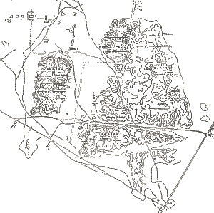

|
Archaeologists have been excavating ancient cities of the Indus Valley and studying their finds for the past 150 years. This Explore offers information about the ancient city of Mohenjo-daro. Click on the plan of Mohenjo-daro to explore the site 
Learn about the discovery of Mohenjo-daro and excavations at the site |